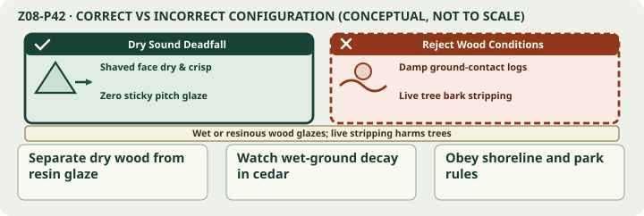

Z08-P42 · Rocks, minerals and materials · Adapted historical material
Northern White Cedar and Eastern Cottonwood Moisture Limits
Assess dead dry northern white cedar and floodplain cottonwood while screening out resin glaze, rot, and wet-ground decay.
When it applies · Upper Midwest wetland-edge and river-valley educational wood study.
Equipment · Dead downed branches on lawful sites; visual moisture check.

Actions
- Distinguish northern white cedar (Thuja occidentalis, flat scale-leaf sprays and shredding fibrous bark) and eastern cottonwood (Populus deltoides, furrowed bark and triangular leaves) using verified multi-trait keys.[R15, B16]
- Reject resin-soaked cedar knots or ground-soaked floodplain cottonwood because sticky resin glazes surfaces and damp heartwood resists drying.[R15, C04]
- Respect wetland, shoreline, and park prohibitions; never peel living cedar bark or disturb protected cedar swamp communities.[R09, R10, R18]
Failure recognition · Using pitch-glazed cedar or wet riverside cottonwood causes persistent glazing, wasted effort, and ecological harm if live trees are stripped.[R09, R15]
Verify · Evaluated sample is lawfully gathered dead wood free of sticky resin streaks and spongy waterlogged decay.[R09, R15]
Stop or change course · Stop collecting in cedar swamps, SNAs, or state parks, and abandon damp wood rather than forcing exhausted trials.[R09, R10, R15]
Evidence and editorial notes
- B16 · Minnesota DNR · Native Trees of Minnesota Identification Reference (Current web edition)
- Section: Native Minnesota trees: bark, buds, leaves, cones, and nuts · Conditions: Identifying oaks, pines, birches, maples, basswood, walnut, and spruce across seasons
Support: Reliable tree identification integrates leaf/needle arrangement, bud scales, bark pattern, fruit/cone structure, and habitat across seasons.
Limitations: Tree nuts and bark materials can require specific processing (e.g., tannin leaching) and remain on consumption HOLD until reviewed. · Conflicting evidence: None noted.
Editorial note: Anchors Z05 regional tree-food & bark profiles. · Specialist reviewer: Forestry botanist
Primary source · checked 2026-11-25 - C04 · USDA Forest Service / Smokey Bear · Smokey Bear’s Campfire Safety Guide (agency PDF)
- Section: Maintain and extinguish a campfire · Conditions: Occupied campfire, water and tools available
Support: Stay with the fire. Drown, stir and add water again until cool. Leaving visible embers or merely covering them is unsafe.
Limitations: Deep duff or peat soils can hold smoldering embers underground even after surface ash cools. · Conflicting evidence: None; prohibits dirt-only burial as primary extinguishment.
Editorial note: Enforces drown-stir-feel-cold cycle before site departure. · Specialist reviewer: Fire prevention and land management
Primary source · checked 2026-11-24 - R09 · Minnesota DNR · Minnesota State Park Rules and Resource Collecting Restrictions (Current web edition)
- Section: State park natural-feature protection · Conditions: Minnesota State Parks and Recreation Areas
Support: Removing rocks, minerals, soil, or live vegetation from Minnesota State Parks is prohibited to protect natural resources.
Limitations: Verify jurisdiction boundaries before picking up specimens even along shorelines or trails. · Conflicting evidence: None noted.
Editorial note: Bounds state-park material collection. · Specialist reviewer: Minnesota DNR resource manager
Primary source · checked 2026-11-25 - R10 · Minnesota DNR · Scientific and Natural Areas Visitor Rules and Prohibitions (Current web edition)
- Section: No collecting plants, animals, rocks or fossils; Foraging · Conditions: Minnesota Scientific and Natural Areas, subject to the actual site rules
Support: Leave natural features in place unless the site lists an applicable exception or there is a valid authorization.
Limitations: Certain named sites have limited berry or mushroom exceptions. They do not extend to rocks or general digging. · Conflicting evidence: Conditions are recorded in the A03 audit.
Editorial note: Enforces SNA zero-collection boundaries. · Specialist reviewer: Minnesota DNR SNA manager
Primary source · checked 2026-11-25 - R15 · Minnesota DNR · Native Trees of Minnesota Identification Reference (Current web edition)
- Section: Regional wood species, grain, bark, and moisture variability · Conditions: Dead downed wood and natural bast fibers in Upper Midwest forests
Support: Wood density, grain straightness, resin content, and decay state vary widely by species, tree part, and moisture history.
Limitations: Visual grain inspection cannot certify structural load capacity; avoid cutting live trees where prohibited and reject punky or cracked wood. · Conflicting evidence: None noted.
Editorial note: Reconciles B007 wood notes with material limits. · Specialist reviewer: Forestry and wood-science specialist
Primary source · checked 2026-11-25 - R18 · Minnesota DNR · Minnesota Native Plant Communities and Biomes (Current web edition)
- Section: Natural plant fiber harvest limits and conservation ethics · Conditions: Bast fibers, rushes, sedges, and woody stems in regional biomes
Support: Harvesting fibrous plants without landowner permission or in protected native plant communities damages ecosystems and may violate law.
Limitations: Strength of hand-twisted plant cordage varies sharply with retting, moisture, and knots; never assign life-safety loads. · Conflicting evidence: None noted.
Editorial note: Connects Z08 fibers to Z09 load limits and law. · Specialist reviewer: Botanist and materials specialist
Primary source · checked 2026-11-25
Source lineage · Adapted historical material (B007 wood selection) · Classification · Adapted historical material.